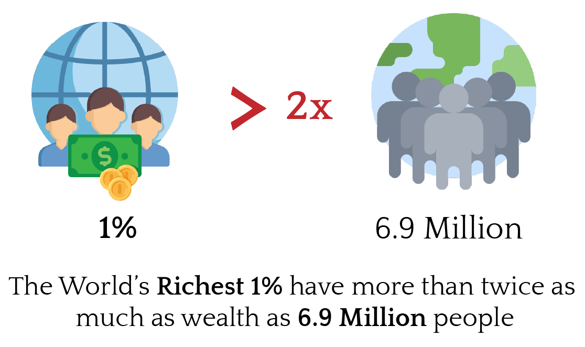
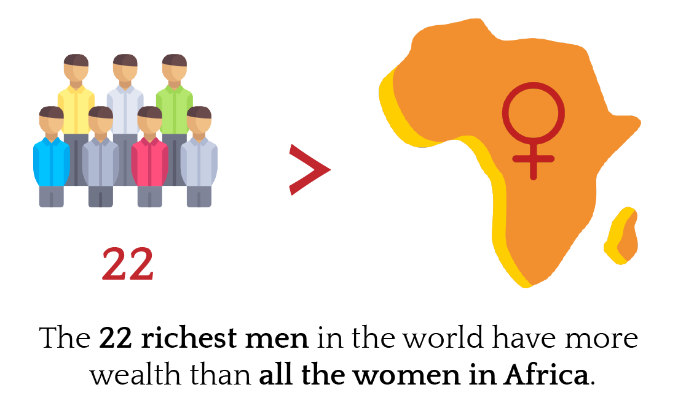
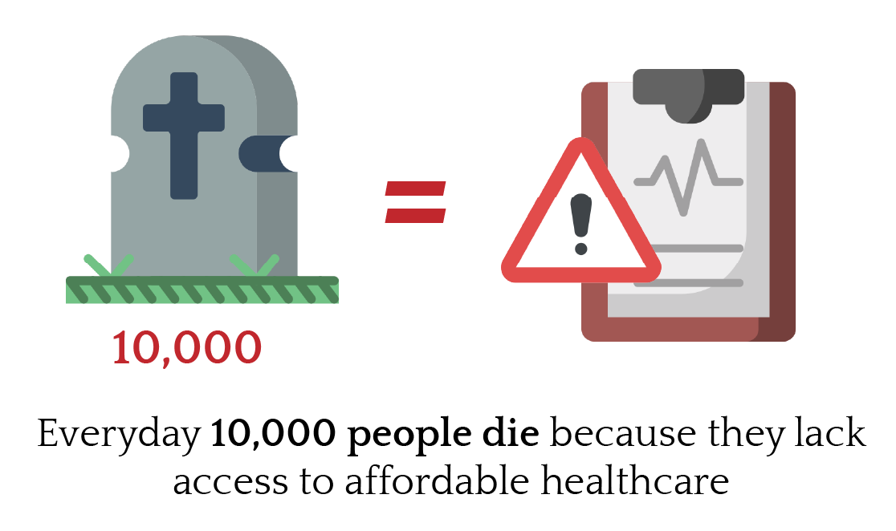
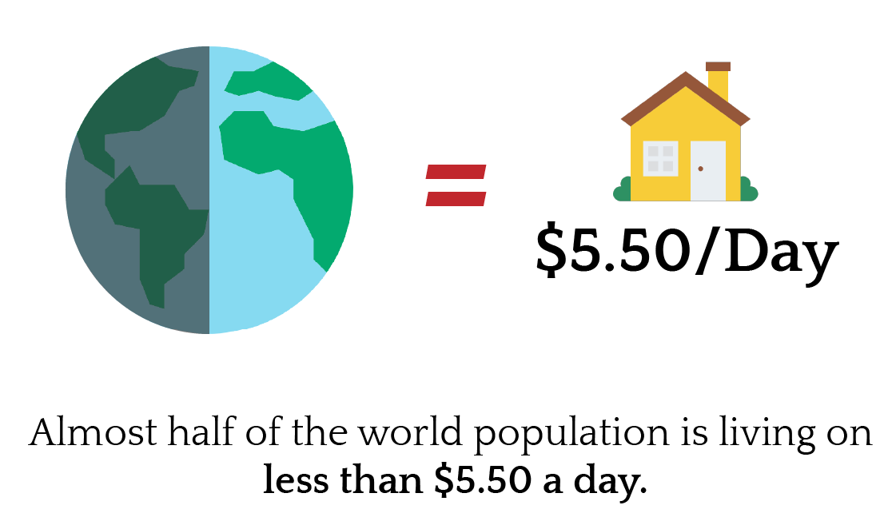

Global income inequality increased for 2 centuries and is now falling.
Good to know, right? Want to know more about how has income inequality within countries been changing around the world more generally? Use the visualisation below
Comparison of World's Richest and Poorest Countries
The Gini Coefficient has increased and decreased for different countries irrespective of their richness. This is evident in below line chart. Green highlights the richest countries, Red highlights the poorest countries and Yellow highlights the countries in between.
**Note: The line chart is interactive. You can also select the legend to view a particular country
It's a mistake to think that inequality is rising everywhere. Over the last 25 years, inequality has gone up in many countries and has fallen in many others. It's important to know this. It shows that rising inequality is not ubiquitous, nor inevitable in the face of globalisation, and suggests that politics and policy at the level of individual countries can make a difference.
2) Across countries, the average level of inequality has not changed
The rises and falls seen in the Gini index in different countries more or less cancel out, the average Gini across countries fell marginally from 39.6 to 38.6.
There were slight rises in some countries like USA, Ethopia and also slight falls in some countries like China and Ireland.
3) Cannot make generalisations about inequality across the globe
It is difficult to make generalisations about inequality across the globe based on what we see in rich countries. Nor should we limit ourselves to thinking inequality must either be going up or going down. Whether inequality is rising or falling depends on where, when and what aspect of inequality we have in mind.
Should we still care? Here are some quick facts




If we are concerned about equality of opportunity tomorrow, we need to be concerned about inequality of outcome today"> - Anthony B. Atkinson